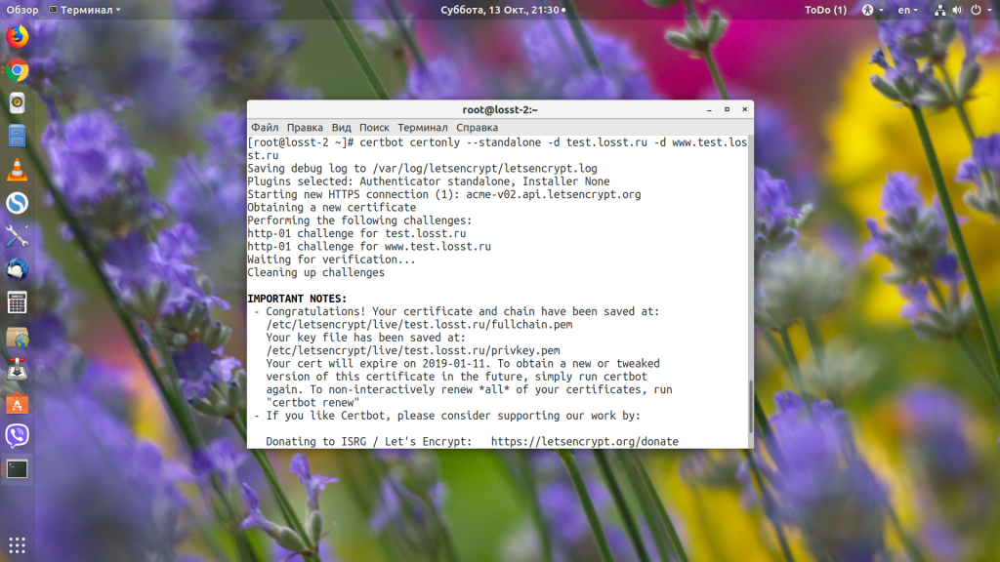

В последнее время забота о безопасности и приватности пользователей набирает обороты. Когда проектировался интернет и протокол HTTP, о таких понятиях не думали. Поэтому весь трафик, передаваемый между веб-сервером и пользователем по протоколу HTTP, может быть просмотрен кем угодно, кто находится на пути этого трафика, например провайдером или хакерами.
Поэтому был придуман протокол HTTPS, который позволяет шифровать трафик и таим образом обезопасить его от перехвата. Для шифрования используются SSL-сертификаты. Раньше эти сертификаты стояли денег, но благодаря компании Let's Encrypt теперь любой веб-сайт может установить SSL-сертификат и настроить шифрование абсолютно бесплатно. В этой статье мы рассмотрим, как получить сертификат Let's Encrypt с помощью официального клиента Certbot.
Вообще, нам не обязательно использовать именно Certbot, мы могли бы создать сертификат в OpenSSL, а затем просто подписать его с помощью ACME API от Let's Encrypt. Но к этому API надо выполнять запросы в формате JSON, что очень неудобно делать из командной строки, поэтому лучше использовать один из клиентов. Например Certbot. К тому же, большинство клиентов ACME уже включают автоматическую генерацию сертификата в OpenSSL.
Прежде чем перейти к работе, давайте рассмотрим синтаксис утилиты Certbot и её команды. Они выглядят достаточно просто:
certbot команда опции -d домен
Команды используются для того, чтобы сообщить утилите, что именно надо сделать. Вот основные из них:
run - используется по умолчанию, если никакая команда не указана, получает и устанавливает сертификат;
certonly - только получает или обновляет сертификат, но не устанавливает его;
renew - обновляет сертификат;
enhance - добавляет настройки безопасности для существующих сертификатов;
certificates - отображает установленные сертификаты;
revoke - отзывает сертификат;
delete - удаляет сертификат;
register - создает ACME-аккаунт;
Как видите, команд не так много, и теперь вы в них точно не запутаетесь, а теперь разберём основные опции:
-d - указывает домен или список доменов, разделённых запятыми, для которых надо получить сертификаты;
--apache - использовать плагин apache для установки сертификата;
--nginx - использовать плагин nginx;
--standalone - запускать собственный веб-сервер для аутентификации при получении сертификата;
--preferred-challenges - позволяет выбрать способ аутентификации, по умолчанию http, но можно выбрать dns;
--server - позволяет указать адрес ACME-сервера, нужно для WildCard-сертификатов, поскольку они поддерживаются только второй версией ACME;
--webroot - поместить файлы аутентификации в папку веб-сервера;
-w - указывает папку веб-сервера, куда надо поместить файлы аутентификации;
--manual - создание сертификата в ручном режиме;
-n - запустить утилиту в не интерактивном режиме;
--dry-run - тестовый запуск без сохранения изменений на диск.
Теперь мы готовы к тому, чтобы перейти к работе с утилитой. Сначала установим её.
Сначала необходимо установить утилиту Certbot. Это официальный клиент, и он есть в репозиториях большинства дистрибутивов. Установка Certbot в Ubuntu выполняется из PPA:
sudo
apt install software-properties-common
sudo
add-apt-repository ppa:certbot/certbot
sudo
apt update
sudo
apt install certbot
Если вы знаете, для какой платформы будут генерироваться сертификаты, то можно установить отдельные расширения для них, они позволяют автоматически редактировать конфигурацию. Например, вы можете установить модуль для apache или nginx:
sudo
apt install python-certbot-apache
sudo
apt install python-certbot-nginx
Эти плагины нужны, если вы собираетесь использовать соответствующие опции для автоматической установки.
Если вам нужен сертификат для веб-сервера, который не поддерживается программой, вам придётся устанавливать его вручную. Получить такой сертификат можно с помощью команды certonly:
sudo
certbot certonly --webroot -w /var/www/test.losst.ru -d test.losst.ru
-d www.test.losst.ru
Эта команда получает сертификат для доменов test.losst.ru и www.test.losst.ru. Файлы для подтверждения аутентификации будут размещены в каталоге /var/www/example/. Также вы можете использовать встроенный веб-сервер для аутентификации:
sudo
certbot certonly --standalone -d test.losst.ru -d www.test.losst.ru
Во время генерации сертификата утилита спросит ваш Email-адрес для аккаунта ACME, на который будут приходить уведомления о необходимости продления и другая информация:
З атем вам предложат подтвердить, что вы прочитали правила использования сервиса, ответьте А:
Далее вас спросят, хотите ли вы сделать ваш Email публичным:
Только после этого начнётся получение сертификата. Если всё прошло успешно, то ваш сертификат будет сохранён в /etc/letsencrypt/live/имя_домена/, оттуда вы уже можете использовать их в своих приложениях. Если же возникли ошибки, то утилита сообщит об этом.

Вам не обязательно вручную устанавливать сертификаты, вы можете использовать один из доступных плагинов для автоматического обновления конфигурации. Например, рассмотрим использование плагина для Nginx:
sudo
certbot run --nginx
Дополнительные параметры задавать не надо, потому что утилита сама прочитает конфигурацию и выведет список доступных доменов:
Введите цифру нужного домена или несколько цифр, разделённых запятой. Утилита сама установит всё, что нужно, а затем спросит вас, нужно ли перенаправлять http-трафик на https:
Затем утилита выдаст ту же информацию, что и в предыдущем варианте:
Чтобы выполнить обновление сертификата Let's Encrypt, достаточно запустить команду certbot с опцией certonly. Учитывая, что сертификат находится в папке certbot, а конфигурация веб-сервера настроена именно на эту папку, то этой операции достаточно. Если же сертификаты копируются в другую папку, то вам понадобится скрипт для их автоматического копирования после обновления.
sudo
certbot certonly -d test.losst.ru -d www.test.losst.ru
Если срок службы сертификата ещё не вышел и обновление не требуется, утилита спросит вас, действительно ли это надо сделать.
Если вы хотите обновлять сертификат в не интерактивном режиме, например с помощью скрипта, то нужно использовать опцию -n, также при использовании этой опции надо передать плагин, который будет использоваться для аутентификации:
sudo
certbot certonly --nginx -n -d test.losst.ru -d www.test.losst.ru
Теперь можно добавить эту команду в планировщик cron, например раз в неделю:
crontab
-e
0
0 * * 0 /usr/bin/certbot certonly --nginx -n -d test.losst.ru -d
www.test.losst.ru
Если вы хотите обновить сертификаты для всех доменов одной командной в не интерактивном режиме, достаточно выполнить команду:
sudo
certbot renew
Let's Encrypt Wildcard-сертификаты появились относительно недавно. Они позволяют использовать один сертификат для всех поддоменов определённого домена, например *.test.losst.ru. Но и работает это всё сложнее - вам надо будет подтвердить, что этот домен принадлежит именно вам. Для этого надо добавить TXT-запись к зоне домена.
Вы можете сделать это вручную или же использовать dns-плагин для Certbot, чтобы добавить её автоматически. Правда, плагин поддерживается только для популярных сервисов, таких, как DigitalOcean, Linode, Cloudflare и так далее. В этой статье рассмотрим ручной вариант. Команда для генерации сертификата будет выглядеть вот так:
sudo
certbot certonly --agree-tos -d test.losst.ru -d *.test.losst.ru
--preferred-challenges dns --manual --server
https://acme-v02.api.letsencrypt.org/directory
Вам надо будет разрешить публикацию вашего IP-адреса, а потом добавить TXT-запись с нужным именем и значением к вашей доменной зоне. В моем случае это _acme-challenge.test.losst.ru со специальным хэшем:
Нужная TXT-запись в службе dmains.webmoney.ru выглядит вот так:
На обновление доменной зоны может уйти несколько часов, поэтому команду придётся выполнить ещё пару раз позже. После генерации сертификата вы можете использовать его как обычный сертификат для всех поддерживаемых доменов.
В этой статье мы рассмотрели, как получить сертификат Let's Encrypt с помощью клиента Certbot. Если у вас есть полный доступ к вашему серверу, то сделать это достаточно просто. Поэтому бесплатный сертификат Let's Encrypt может получить каждый. На losst.ru тоже используются SSL-сертификаты от этого удостоверяющего центра, только создаются они с помощью автоматического скрипта панели управления Vesta. А для чего вы используете Let's Encrypt? Напишите в комментариях!